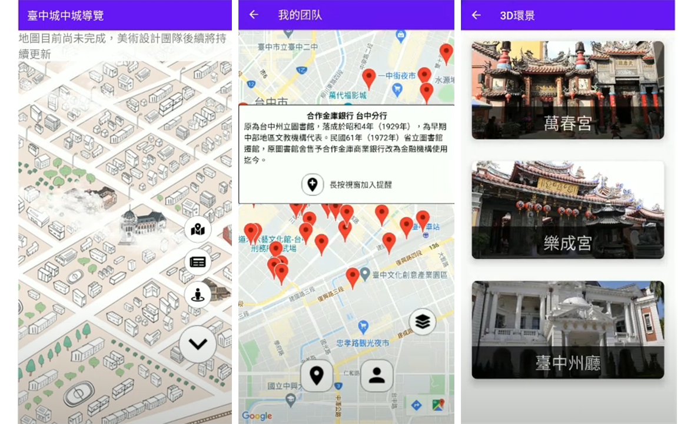

蔡恩揚
Alen Chua
3年以上前端網頁開發經驗 | 華僑
# 專注與 React.js 相關技術及應用
# 具備豐富的管理系統開發經驗
# 2021逢甲大學 - 資訊工程學系畢業
Portfolio 作品集
感情加佳：社交游戲製作平臺
此案為畢業專題作品，擔任小組隊長,並負責平臺前端UI設計及切板，HTML5小游戲製作。
榮獲逢甲AI搖籃計劃|學生創新傑出團隊獎
這是一個客制化游戲的服務平臺。本意在於可以輕鬆打造屬於你的社交小游戲，並作爲禮品贈于他人。 編輯平臺支援你更改小游戲的貼圖素材，對白文本及一些參數達成客制化的目的。
在耍廢啊？：個人時間管理應用
此案為分組專題，擔任小組隊長, 並負責APP的UI設計及APP的切板。
榮獲2019 APP創意城市競賽 | 二等獎。
使用AndroidStudio，fireBase, SQLite製作。
這是一個行事曆APP。亮點在於當你認爲自己定力不足時，可以為自己的監護人設定一個時間任務，時間到時就會提醒你的監護人來“關心”你。

USR計劃 - 臺中市文化城中城 - 導覽APP
此案為2021年教育部與逢甲大學合作的【臺中市文化城中城地方創生計畫】中，應用平臺推廣的部分，負責導覽APP功能發想及APP各個功能實作。
使用AndroidStudio，fireBase, SQLite製作。
這是一個導覽APP，在地圖上呈現42処臺中老建築物的資訊, 也可透過更改地圖年份查看舊臺中地圖。
團隊追蹤系統：隊員間可以透過地圖即時查看到各自的位置。
最新消息：檢視官網上新增的消息或文章。
3D景觀查看：導向團隊製作的互動3D地圖平臺查看對應的3D場景。